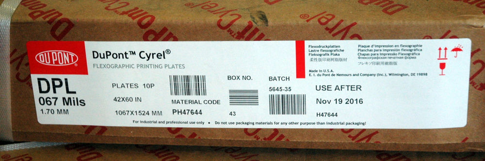

FOTOPOLIMERO
Un fotopolímero es una sustancia sintética que sufre un cambio en sus propiedades fisicas(polimerización, reticulación o despolimerización) por acción de la luz, generalmente ultravioleta, formando una diferenciación física entre las partes expuestas y no expuestas.
Un fotopolímero, considerando una definición amplia, es una formulación cuya base es un polímero orgánico cuya característica principal es que es sensible a la luz de determinada longitud de onda. La formulación básica consta de un colorante sensibilizador, un iniciador generador de radicales libres y uno o varios monómeros polimerizables. Estos componentes se sitúan en una matriz formada por un polímero como PVA, poliacrilato, PVC, etc. Son muchas las aplicaciones de estos materiales, por ejemplo, tintas fotocurables, barnices y pinturas entrecruzantes, resinas activadas mediante una reacción fotoquímica. Aquí nos centraremos en su aplicación como material de registro holográfico. Para cualquiera de las aplicaciones comentadas, el mecanismo de acción del fotopolímero es siempre el mismo. El material absorbe luz de una determinada longitud de onda. La luz excita el colorante que activa el iniciador. Esta sustancia genera radicales libres que reaccionan con el monómero produciendo una reacción de polimerización. Las cadenas de polímero generadas en la reacción de fotopolimerización son las responsables de las propiedades perseguidas con estos materiales.
Esta seria la Teoria de como funciona el fotopolimero, importante para poder comprender su forma de funcionamiento y lograr un adecuado producto terminado.
MARCAS DE FOTOPOLIMEROS
En el mercado existen muchas marcas con las que se puede trabajar, cada una posee caracteristicas propias como la dureza que alcanza, la trasparencia del proucto, niveles de absorcion de tinta, porosidad, etc. que las hacen ser preferidas por los fabricantes. Unas de las marcas mas conocidas a nivel mundial son:- Trodat
- ColorP
- PolyStamp
- Shiny
CYREL
Comunmente son llamadas Cyrel, pero vale acotar que Cyrel es una marca registrada de la empresa Dupont quien es lider en la comercializacion de estas planchas flexográficas que son utilizadas mas que todo en el area industrial, para trabajos sobre cartones corrugados, etiquetas, empaques flexibles, etc. 
FOTOPOLIMERO O PLANCHAS FLEXOGRAFICAS
En muchos locales de artes graficas usted se encontrará con el debate si es mejor usar Fotopolimero o Planchas Flexograficas, aqui daremos una orientacion general que le puede permitir a usted tomar esa decicion.COMPARACION GENERAL
- Los equipos y los solventes para trabajar con Fotopolimeros son mas economicos.
- El proceso con Fotopolimeros es mas largo y engorroso
- El proceso con la Plancha Flexografica esta mas relacionado con trabajos de produccion industrial.
- El Acabado de las planchas Flexograficas es mejor que el acabado que brinda el Fotopolimero
- Las Planchas Flexograficas requieren mayor tiempo de exposicion y el negativo utilizado puede tener tramas que daran efecto al producto terminado
Las tecnicas de quemado de fotopolimeros y planchas flexograficas son diferentes en cuanto a la calidad del producto terminado
El espesor del fotopolimero se logra con la exposicion equilibrada de tiempo tanto en el tiro como en el retiro, puede ver una referencia